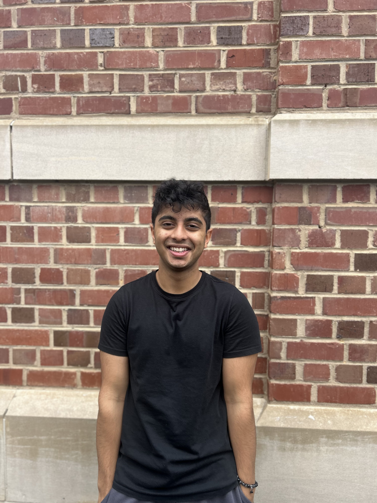
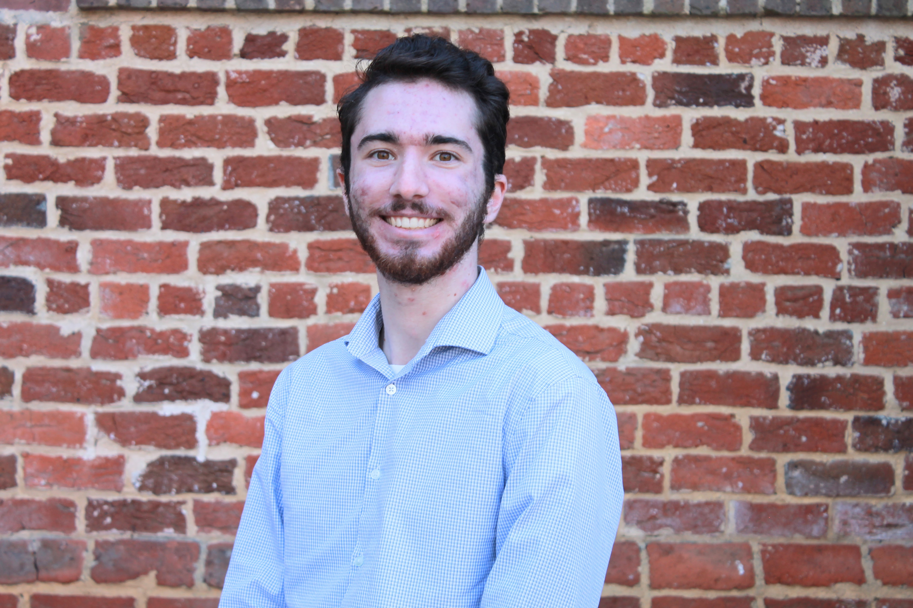
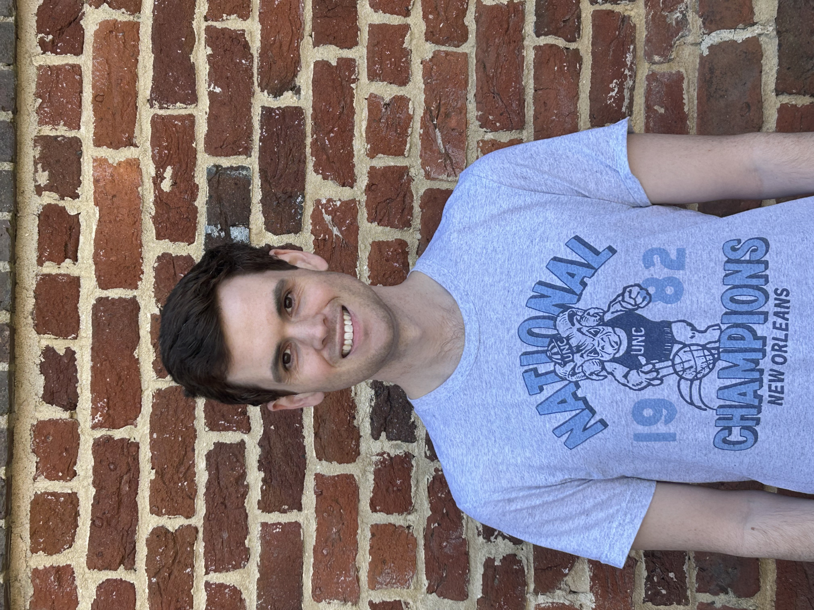
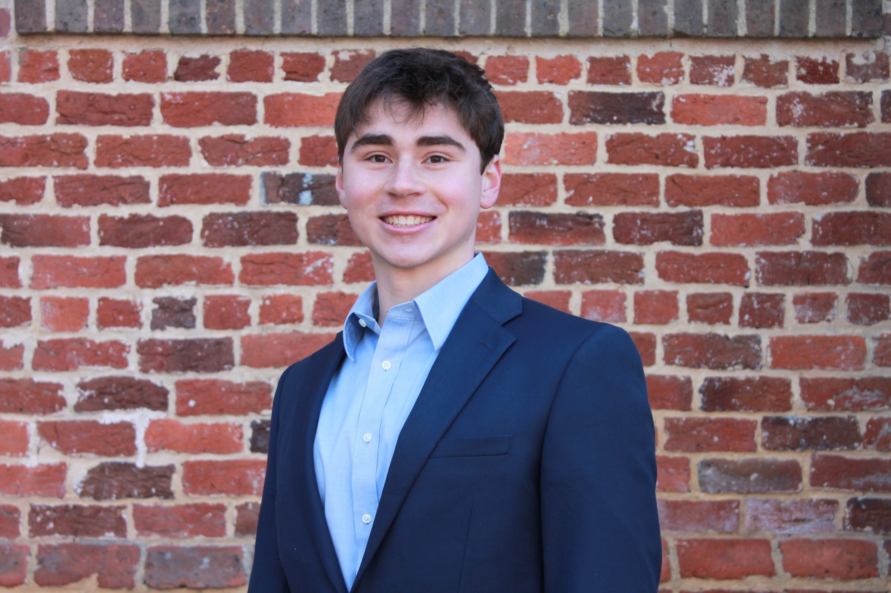

Current SAIL Team
Undergraduates

Shane Faberman
Undergraduate Sports Analyst, 2024–Present
Data Science and Computer Science
Basketball, football, baseball, in-game decision-making, and team development

Arsh Madhani
Undergraduate Sports Analyst, 2024-Present
Computer Science and Physics (Quantitative Finance concentration)
Sports betting, predictive modeling, capital markets, basketball
Isabel Marshall
Undergraduate Sports Analyst, 2024-Present
Business Administration and Physics (Quantitative Finance concentration)
Investment strategy, athletic performance, capital markets, and sports industry
Yunus Mouline
Undergraduate Sports Analyst, 2024-Present
Statistics & Analytics and Mathematics (Spanish minor)
Basketball, track and field, predictive modeling, data visualization, and sports betting
Aneesh Sallaram
Undergraduate Sports Analyst, 2024-Present
Computer Science and Statistics & Analytics
Basketball, baseball, line-up efficiency, predictive metrics
Khushi Shah
Undergraduate Sports Analyst, 2024-Present
Statistics & Analytics (Data Science and Neuroscience minors)
Volleyball, athletic performance, exercise physiology, metabolism, and neuroscience

Gordan Tao
Undergraduate Sports Analyst, 2024-Present
Computer Science and Data Science
Athletic performance and training
Undergraduates
Conor Kerr
Founder, 2022-Present
Principal, 2022-2025
Statistics & Analytics and Economics (Mathematics minor)
Basketball, athletic performance, athletic training, and sports economics
Connor McManus
Undergraduate Sports Analyst, 2024-Present
Statistics & Analytics and Biology
Football, injury prevention, and volleyball.
Shane Faberman
Undergraduate Sports Analyst, 2024-Present
Data Science and Computer Science
Basketball, football, baseball, in-game decision-making, and team development
Yunus Mouline
Undergraduate Sports Analyst, 2024-Present
Statistics & Analytics and Mathematics (Spanish minor)
Basketball, track and field, predictive modeling, data visualization, and sports betting
Gordon Tao
Undergraduate Sports Analyst, 2024-Present
Computer Science and Data Science
Athletic performance and training
Khushi Shah
Undergraduate Sports Analyst, 2024-Present
Statistics & Analytics (Data Science and Neuroscience minors)
Volleyball, athletic performance, exercise physiology, metabolism, and neuroscience.
Abigail Mabe
Undergraduate Sports Analyst, 2023-Present
Statistics & Analytics and Biology (Data Science minor)
Marathon racing, swimming, data visualization, extreme value theory, and Bayesian data analysis
Isabel Marshall
Undergraduate Sports Analyst, 2024-Present
Business Administration and Physics (Quantitative Finance concentration)
Investment strategy, athletic performance, capital markets, and sports industry
Arsh Madhani
Undergraduate Sports Analyst, 2024-Present
Computer Science and Physics (Quantitative Finance concentration)
Sports betting, predictive modeling, capital markets, basketball
Graduate Advisors
<<<<<<< Updated upstream
Kendall Thomas
Graduate Advisor, 2023-Present
Principal, 2025-Present
Ph.D. Student in Statistics and Operations Research
B.S. in Mathematics and Computer Science (Davidson College)
Athletic performance, injury prevention, soccer, basketball, football, and volleyball

Lewis Dubrowski
Graduate Advisor, 2024-Present
Undergraduate Sports Analyst, 2023-2024
Ph.D. Student in Statistics and Operations Research
B.S. in Statistics & Analytics (University of North Carolina at Chapel Hill)
Formerly Statistics & Analytics and Exercise Sport Science Major (History minor)
Baseball, prediction, and biomechanics

Coleman Ferrell
Graduate Advisor, 2024-Present
Ph.D. Student in Statistics and Operations Research
B.S. in Industrial Engineering and Mathematics (East Carolina University)
Sport-related concussions, neuroimaging, and multivariate statistics
Abigail Mabe
Graduate Advisor, 2025-Present
Undergraduate Sports Analyst, 2023-2025
M.S.P.H. Student in Biostatistics
B.S. in Statistics & Analytics and B.A. in Biology (University of North Carolina at Chapel Hill)
Marathon racing, swimming, data visualization, extreme value theory, and Bayesian data analysis
Kendall Thomas
Graduate Advisor, 2023-Present
Principal, 2025-Present
Ph.D. student in Statistics and Operations Research
Athletic performance, injury prevention, soccer, basketball, football, and volleyball
Lewis Dubrowski
Graduate Advisor, 2024-Present
Undergraduate Sports Analyst, 2023-2024
Ph.D. student in Statistics and Operations Research
Formerly Statistics & Analytics and Exercise Sport Science Major (History minor)
Baseball, prediction, and biomechanics
Sam Moore
Graduate Student Advisor, 2023-Present
Ph.D. student in Exercise Physiology
Female physiology and athletic performance
Coleman Ferrell
Graduate Advisor, 2024-Present
Ph.D. student in Statistics and Operations Research
Sport-related concussions, neuroimaging, and multivariate Statistics
Faculty Advisors
<<<<<<< Updated upstreamMario Giacomazzo
Faculty Director, 2022-Present
Ph.D. in Statistics (Arizona State University)
Will Lassister
Faculty Advisor, 2023-Present
Ph.D. in Operations Research (Georgia Institute of Technology)

Patrick Lopatto
Faculty Advisor, 2024-Present
Research Tzar, 2025-Present
Ph.D. in Mathematics (Harvard University)
Alumni
Sarah Wooster
sarah.e.wooster@gmail.com
Undergraduate Sports Analyst, 2023-2024
B.S. in Statistics & Analytics and Information Science
PI Brokerage & Investments Data Analyst at Vanguard
Jakob Thoma
jathoma14@gmail.com
Undergraduate Sports Analyst, 2023-2024
B.S. in Statistics & Analytics (Data Science minor)
Data Analyst at Red Ventures

Andy Ackerman
Graduate Advisor, 2022-24
Ph.D. in Statistics and Operations Research
Assistant Professor at Lafayette College
Conor Kerr
Founder, 2022-Present
Principal, 2022-2025
B.S. in Statistics & Analytics and Economics (Mathematics minor)
M.Sc. in Statistical Science Student at University of Oxford

Connor McManus
Undergraduate Sports Analyst, 2024-2025
B.S. in Statistics & Analytics and B.A. in Biology
Data Analyst Associate Consultant at CapTech
Sam Moore
Graduate Student Advisor, 2023-2025
Ph.D. in Exercise Physiology
Assistant Professor at University of Oklahoma
Mario Giacomazzo
Faculty Director, 2022-Present
Ph.D. in Statistics (Arizona State University)
Will Lassister
Faculty Advisor, 2023-Present
Ph.D. in Operations Research (Georgia Institute of Technology)
Patrick Lopatto
Faculty Advisor, 2024-Present
Research Tzar, 2025-Present
Ph.D. in Mathematics (Harvard University)
Alumni
Sarah Wooster
sarah.e.wooster@gmail.com
Undergraduate Sports Analyst, 2023-2024
B.S. in Statistics & Analytics and Information Science
Data and Analytics Advanced Development Program at Vanguard
Jakob Thoma
jathoma14@gmail.com
Undergraduate Sports Analyst, 2023-2024
B.S. in Statistics & Analytics (Data Science minor)
Data Analyst at Red Ventures
Andy Ackerman
Graduate Advisor, 2022-24
Ph.D. student in Statistics and Operations Research
>>>>>>> Stashed changes